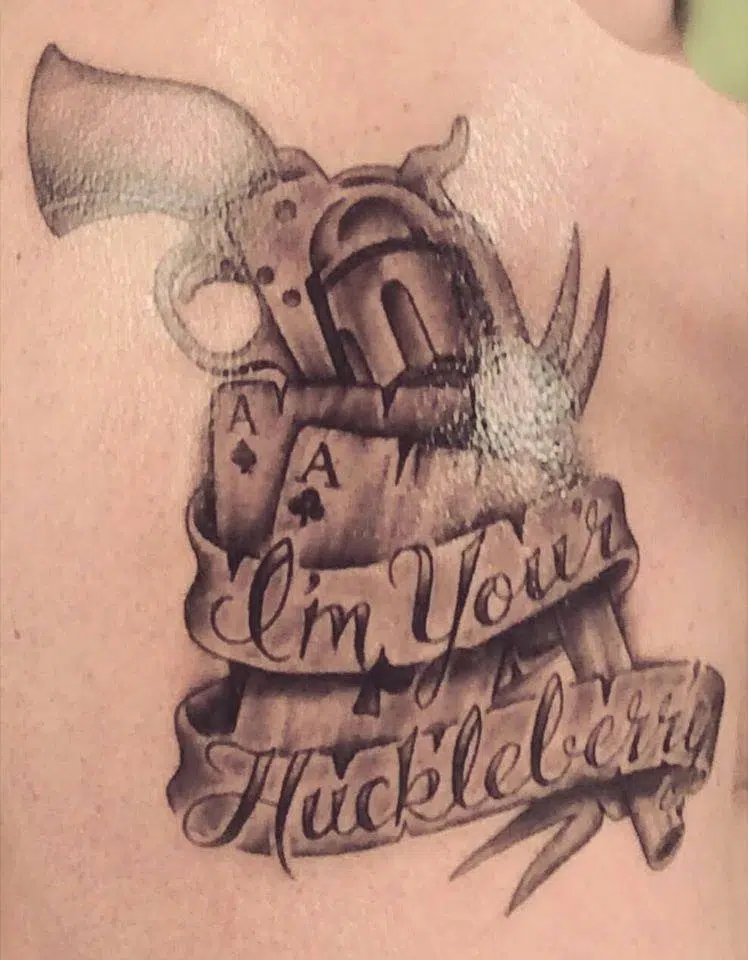
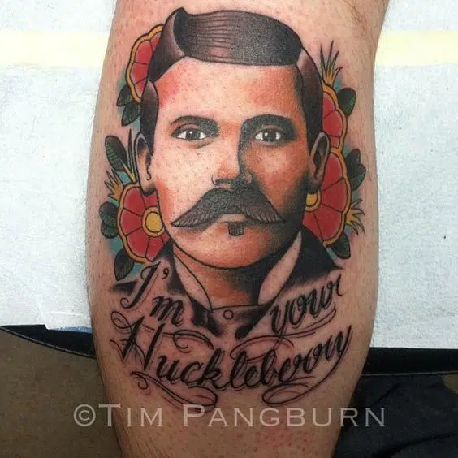

History!
You may love or hate Val Kilmer's performance in the 1993 production of the Tombstone film – most love it. Some even criticized him for misquoting his script. It brought confusion to the huckleberry meaning of Doc Holliday's famous turn of phrase.
So what does "I'm your huckleberry" mean? It became a debated question among Val Kilmer's fans and critics of the film. They have different interpretations of this idiom. It is also unclear where the idea came from. Some credit it to Mark Twain for Huckleberry Finn. Here is an attempt to find the ultimate meaning of the famous American quote.

I'm Your Huckleberry, Gun and Aces tattoo

Doc Holliday I'm Your Huckleberry Tattoo
It was a late day when the Earp brothers stood talking to each other in front of the Oriental. The Southern air was only starting to get heated up when an intoxicated Johnny Ringo appeared on the scene. He stood there on the sidewalk of Allen Street with glaring eyes and arms on his pocket as if ready to make the kill.
The drunken man was looking for trouble. He gawked at the two other men to fight him, but they refused. Disgusted at this blatant rejection, Ringo screams out loud.
"Wretched slugs!" he taunted.
"Don't any of you have the guts to play for blood?"
Then comes Doc Holliday's dramatic entrance.
You can hear Val Kilmer's masculine voice speaking off-scene as the two brothers slowly walk away from the mad man. Acknowledging Ringo's impetus, he utters the phrase calmly,
"I'm your huckleberry."
When Ringo turns to see him, he gives away a sly smile saying,
"That's just my game".
The two men begin to face each other for the duel when Ringo's good old friend comes into the scene to take him out of trouble. It's a pretty exciting scene from the 1993 historical action film Tombstone. But, what's even more interesting is the meaning of that turn of phrase.
So, you ask. What does "I’m your huckleberry" or "I’ll be your huckleberry" mean? Well, it basically means you’re up to do something for someone. In other words, you’re in for the game or the task at hand.
The huckleberry is a small, round wild berry that grows mainly in the southeast of the United States. It resembles the blueberry in color and shape. Because of its size, people use the word figuratively to describe something that is of little importance. It wasn’t the genius of the Tombstone filmmakers that made the peculiar expression famous. They were only being faithful to the original manuscript from Walter Noble Burns in 1929. Mark Twain even used it as an inspiration for naming Huckleberry Finn. The real Doc Holliday may have actually been saying those words in his lifetime.
Huckleberry was quite a fashionable word in the nineteenth century.
People use it to express sweet and gentle affection. Gambling circles
also draw on the huckleberry to describe something small. The
huckleberry meaning in Doc’s statement spells trouble for Johnny Ringo.
It would be funny to think of Mark Twain’s idea in the Tombstone film.
The literal huckleberry meaning may also come from the way of picking
huckleberries. Harvesting these berries comes pretty easy. You can strip
them off the bush in one fell swoop. To say I’m your huckleberry is also
like saying pick me or choose me. This huckleberry meaning fits well
with Finn’s character in Mark Twain’s novel. He is Tom Sawyer’s faithful
companion and trusty sidekick. The author also used huckleberry in an
article published in 1880 to describe a milking cow. The story came out
even before The Adventures of Huckleberry Fin was published.
Huckleberry Finn already appeared in Mark Twain’s first novel, The
Adventures of Tom Sawyer. He described Sawyer as being a little bit
jealous of the little Huck Finn. It sounds amusing to hear Doc Holliday
speaking that idiom to Johnny Ringo in the Tombstone film. It was indeed
a pretty clever way to pick on the crackbrain..